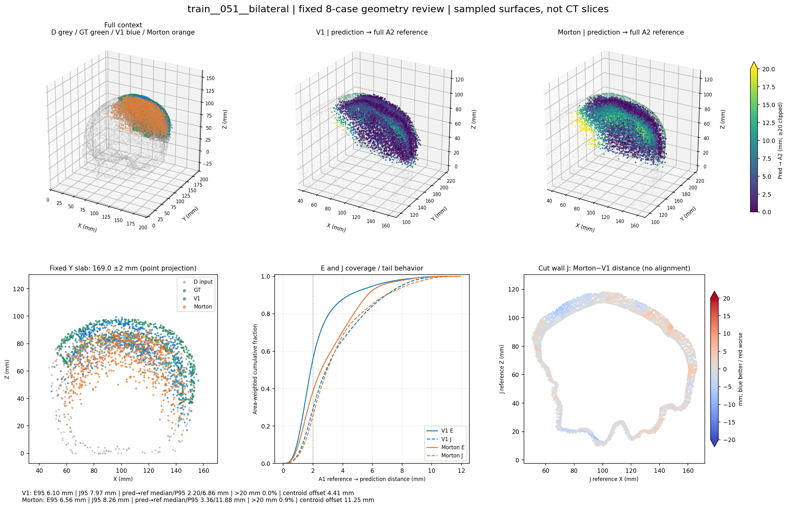
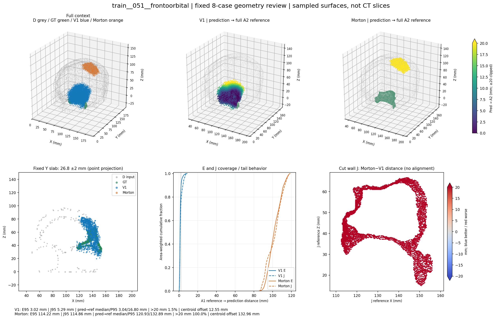
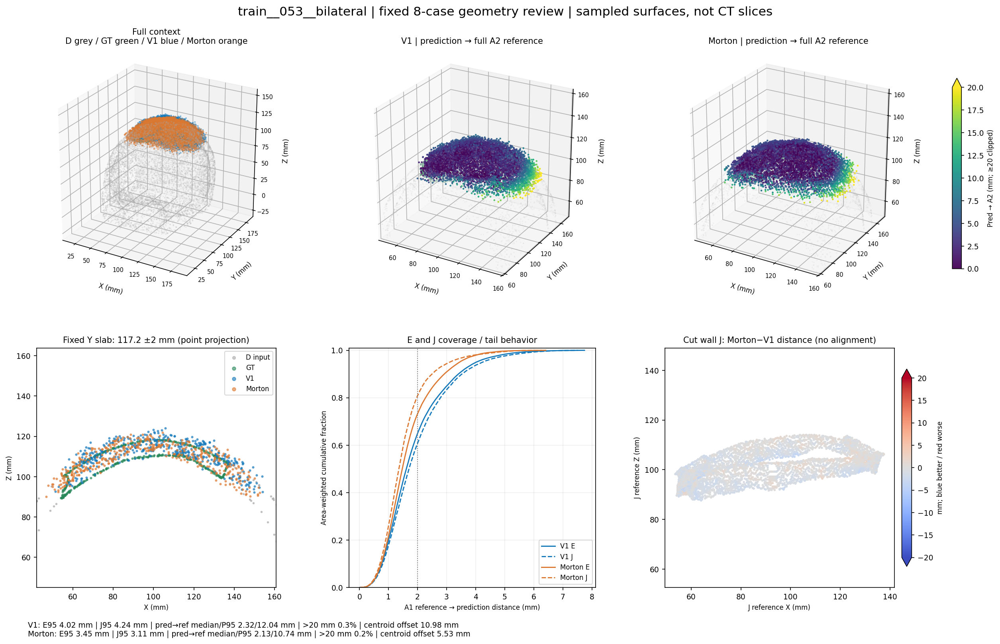
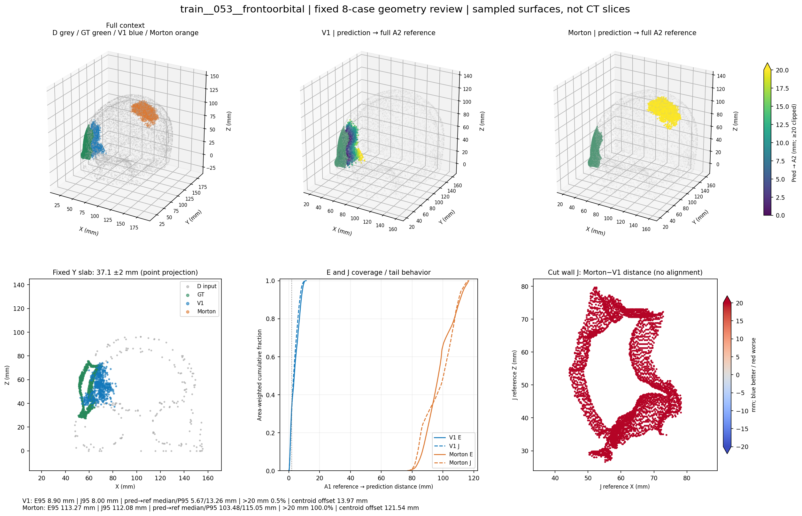
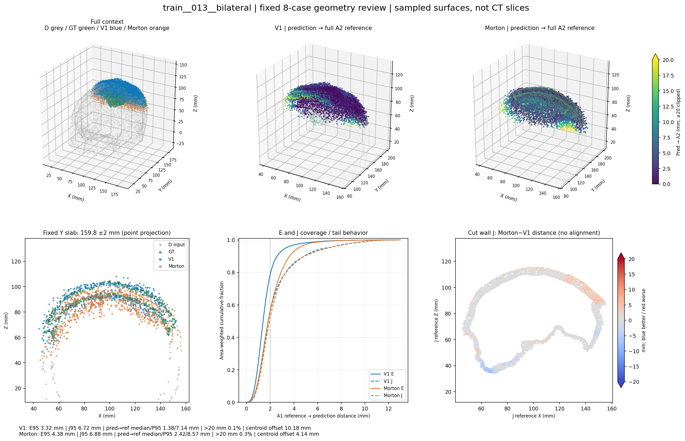
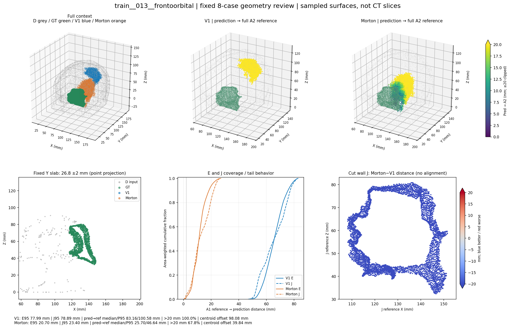
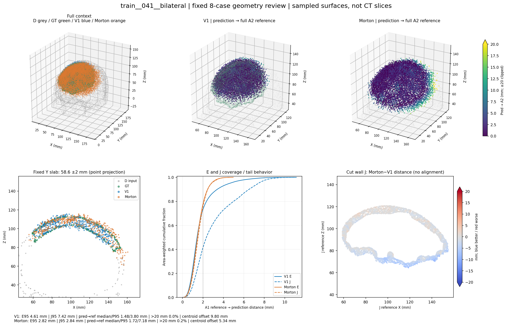
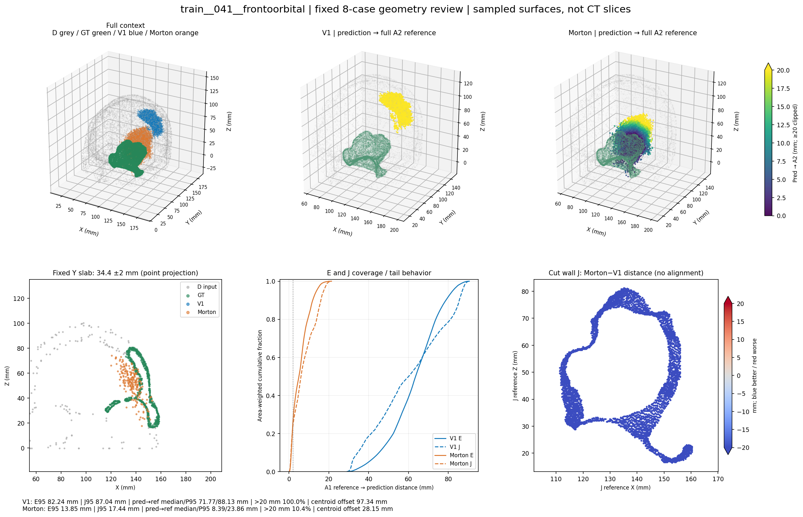

重要：两臂在不同额眶病例都存在整块位置错误。本组按先前结果选定，只作解释，不估计总体错误率、不剔除病例。图中剖面为点云薄层投影，不是CT；所有预测点保留，无配准。
中文审阅报告 · 交互HTML与plotly.min.js须保留同目录，完全离线可用。
两臂整体落在颅盖目标区域。Morton壳面内部偏离／散点尾部更多：反向中位数3.36 mm，P95 11.88 mm；>20 mm仅0.85%，不是整块远离GT。E/J均略退化。

Morton整块骨片落在远离额眶GT的位置，8192点全部距参考>20 mm；反向中位数120.93 mm、质心差132.96 mm。主要是大范围位置／形态错误，不能解释为少数离群或仅切壁误差。V1大体定位正确，但仍有局部壳面及尾部误差。

两臂整体位置合理，Morton的E和J指标均改善，远端尾部略减；说明来源053并非所有缺损都失败。仍能看到预测分布偏离真实薄壳及边缘，不能按单视角认定内外板已正确重建。

Morton再次形成远离目标的完整点簇，全部预测点>20 mm；反向中位数103.48 mm、质心差121.54 mm。是整块位置／形态错误；V1相对定位正确，局部与尾部误差仍存在。

两臂主要处于正确颅盖位置。Morton的E/J和反向距离略差，>20mm比例0.27%；属于局部壳面／边缘和有限散点差异，不是整块大范围定位错误。

V1整块远离目标，全部点>20 mm；Morton明显更接近但仍有67.85%点>20 mm、反向中位数25.70 mm。相对改善不等于重建成功，Morton仍有大范围位置／形态偏差。

两臂整体位于目标颅盖。Morton的E/J覆盖尾部改善明显，J P95 7.42→2.84 mm，但反向P95 3.80→7.18 mm变差，>20mm约0.17%。是接口覆盖与少量散点／局部形态间的权衡，不是所有几何指标同时改善。

V1整块严重偏离，全部点>20 mm；Morton大幅改善，但仍有约10.35%点>20 mm，E/J P95仍为13.85／17.44 mm。残余是较大范围位置／形态及尾部误差，尚不属于只差毫米级切壁微调。
